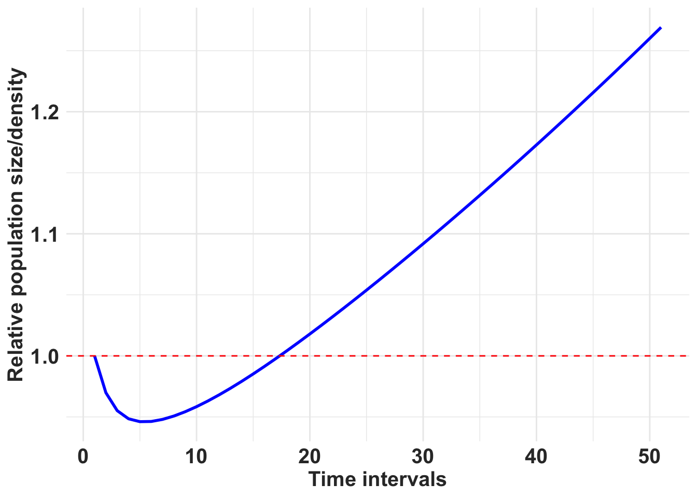
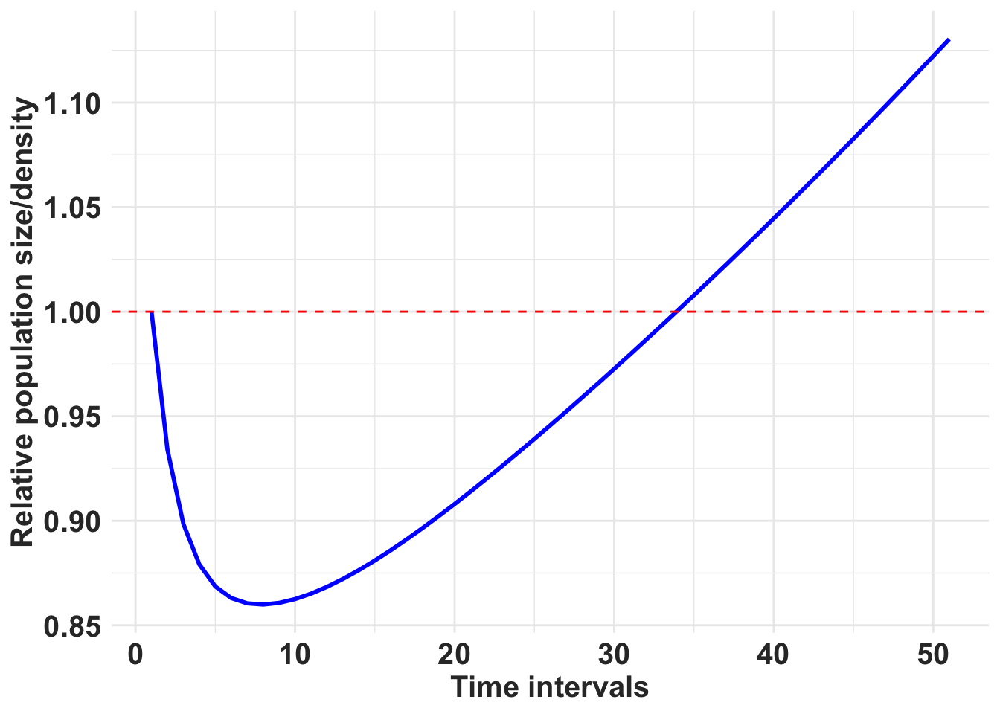
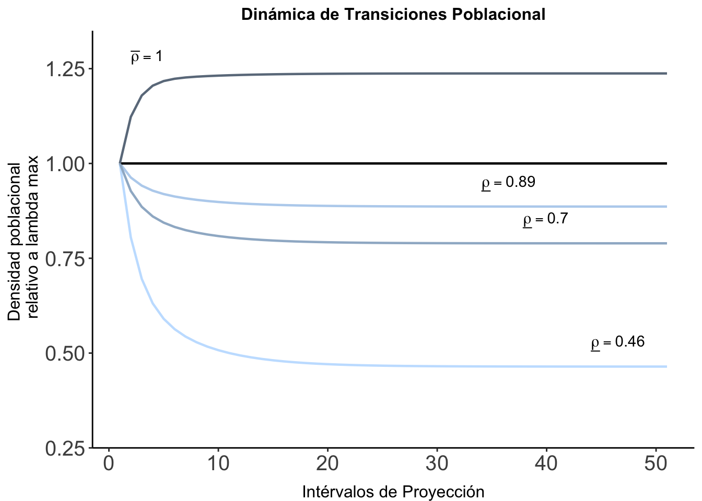

Code
## Librerías de R requeridas para el análisis
library(popdemo)
library(popbio)
library(ggplot2)
library(dplyr)
library(scales)
library(tidyverse)Autores: “Mariana Hernández Apolinar y Paola Portillo Tzompa”
## Librerías de R requeridas para el análisis
library(popdemo)
library(popbio)
library(ggplot2)
library(dplyr)
library(scales)
library(tidyverse)Los modelos de proyección poblacional (MPP), previamente vistos en el capitulo de Índices, son los más utilizados para proyectar la razón de crecimiento de una población después de varios años (i.e. largo plazo) asumiendo que la razón de muertes, la reproducción y el crecimiento de los individuos en las distintas categorías de la población (i.e. tasas vitales) no varían en el tiempo debido a la presencia de condiciones ambientales variables (Caswell, 2000; Crone et al., 2011; Koons, Iles & Stott, 2021). Al mantenerse constantes estas variables en el largo plazo (i.e. deterministas), la población incrementará o decrecerá a una velocidad constante y no cambiará la proporción de individuos por categoría de tamaño/estado (i.e. comportamiento asintótico), [Bierzychudek (1999); Caswell (2000)). Sin embargo, en la naturaleza estas variables distan de ser constantes (i.e. deterministas), debido a que las poblaciones experimentan recursos limitados (v.g. alimento, sitios de refugio), ambientes heterogéneos y cambiantes que perturban a las poblaciones (v.g. deforestación, sequía, huracanes, enfermedades, etc), impactando la dinámica y sugiriendo que la tasa de crecimiento a largo plazo no es un buen predictor de los cambios que enfrentan dichas las poblaciones (Bierzychudek, 1999). De ahí que, se hayan desarrollado modelos que integran dicha variación y que permiten hacer proyecciones más realistas sobre la dinámica poblacional de la especie de estudio, tal es el caso de los modelos de crecimiento estocástico y los análisis de dinámica transitoria.
En particular, los modelos de dinámica transitoria surgen como una alternativa para analizar la dinámica de una población en el corto plazo, cuando se presenta un evento de perturbación repentino que afecta la abundancia de individuos en una o varias de las categorías de poblacional (i.e.cambios en el modelo) o que la estructura de la población varia en tiempo. El análisis no asume cambios en las entradas de la matriz de transición (i.e. condiciones constantes; (Vindenes et al., 2021). De esta forma, en este análisis se evalúa la respuesta inmediata de la población; es decir, antes de alcanzar la estructura estable de estadios/edades y de crecer a una tasa constante Stott, Townley & Hodgson (2011). Esta respuesta a corto plazo es pasajera o temporal y resulta de suponer que la estructura inicial de la población es inestable; de ahí, el nombre de “dinámica transitoria”. Bajo este supuesto, es importante saber qué tanto influye dicha estructura inicial inestable en la dinámica poblacional temporal de corto plazo (Koons, Iles & Stott, 2021). Esta respuesta se determina a través de las discrepancias o diferencias que hay entre la estructura inicial (i.e. corto plazo) y la estructura estable (i.e. largo plazo) de la población analizada (Raventós et al., 2015). Pudiese también que algunas especies o poblaciones nunca converge a una estructura estable (o qué es poco probable que converge), por lo que la dinámica transitoria es la única forma de evaluar la dinámica poblacional de estas especies (Hinrichsen, 2025).
A partir de lo anterior, es evidente que los dos acercamiento para evaluar la dinámica poblacional usando el método tradicional o de de dinámica transitoria abordan distintos aspectos de la dinámica poblacional de una especie y, por lo tanto, hacen uso de ecuaciones distintas en su análisis (Koons, Iles & Stott, 2021). A continuación se listan la serie de pasos a seguir para facilitar y asimilar el desarrollo del complejo análisis de la dinámica transitoria. Este análisis fue planteado por Stott y colaboradores (Stott, Townley & Hodgson, 2011; Stott, Hodgson & Townley, 2012b; Stott, Hodgson & Townley, 2012a) y se lleva a cabo en el Programa de estadística R y los script estan disponible en el packete popdemo.
Matriz de transición y estructura poblacional inicial.
En primer lugar se debe contar con una matriz de proyección poblacional y su correspondiente vector de la estructura poblacional observada al inicio del estudio. A lo largo del desarrollo del análisis en el presente capítulo se usarán los datos obtenidos por Tremblay et al. (Tremblay, Raventos & Ackerman, 2015) y Schödelbauerová et al. (Schödelbauerová, Tremblay & Kindlmann, 2010) para la orquídea epífita Lepanthes rubripetala; en específico usaremos los datos de la población 1 del artículo. En esta especie, los individuos se clasificaron en cuatro categorías de estado: plántula (PL), juvenil (J), adulto no reproductivo (NR) y adulto reproductivo (AR). Esta última categoría florece y produce frutos a largo de todo el año, por lo que el seguimiento de la población fue mensual (Schödelbauerová, Tremblay & Kindlmann, 2010; Tremblay, Raventos & Ackerman, 2015).
En primer lugar se debe contar con una matriz de proyección poblacional y su vector correspondiente de la estructura poblacional observada al inicio del estudio. En en este caso se usarán los datos obtenidos para Lepanthes rubripetala por Tremblay y colaboradores (Schödelbauerová, Tremblay & Kindlmann, 2010; Tremblay, Raventos & Ackerman, 2015). A continuación incorporamos la información de nuestra matriz y la abundancia de individuos por categoría observada al inicio de nuestro estudio. Las función matrix de R fue usada para construir la matriz y n0 se fue usado para nombrar el vector de la estructura inicial observada.
Éste es un análisis de dinámica transitoria para Lepanthes rubripetala (Población 1), cuyo ciclo de vida fue dividido en cuatro clases de estado:
Matriz de transición y estructura poblacional inicial. En el siguiente cuadro se comprueba que la matriz de la estructura poblacional inicial de L. rubripetala haya sido incorporada sin errores. La primera formada por 4 renglones y 4 columnas y la segunda por 4 elementos, que indican el número de individuos encontrados en el estado de plántula (0), juvenil (46), adulto no reproductivo (38) y adulto reproductivo (82) (Schödelbauerová, Tremblay & Kindlmann, 2010; Tremblay, Raventos & Ackerman, 2015).
#Capturar los datos de la matriz para L. rubripetala (Tremblay et al. 2015)
Lr1 <- matrix(c(0.4324, 0, 0, 0.15,
0.3784, 0.8459, 0, 0,
0, 0.0034, 0.7954,0.2300,
0, 0.0890, 0.1841,0.7510), byrow=TRUE,ncol=4)
#Capturar las categorias de estado
estadios <- c("PL", "J", "NR", "AR")
colnames(Lr1) <- rownames(Lr1) <- estadios
#Obtener la matriz L. rubripetala
Lr1 <- matrix(Lr1[1:4, ], nrow = 4, dimnames = list(estadios, estadios))
Lr1 PL J NR AR
PL 0.4324 0.0000 0.0000 0.150
J 0.3784 0.8459 0.0000 0.000
NR 0.0000 0.0034 0.7954 0.230
AR 0.0000 0.0890 0.1841 0.751El vector de la estructura poblacional inicial de L. rubripetala se define como el número de individuos encontrados en cada categoría de estado al inicio del estudio (i.e. \(t_{0}\)). En este caso, la estructura poblacional inicial fue: 0 plántulas, 46 juveniles, 38 adultos no reproductivos y 82 adultos reproductivos (Schödelbauerová, Tremblay & Kindlmann, 2010; Tremblay, Raventos & Ackerman, 2015).
[1] 0 46 38 82La definición del crecimiento asintótico de la población lambda se basa en la tasa de crecimiento poblacional intrínsico cuando la población este a su nivel estable de estructura de edades/estados. Por consecuencia se asume que la población llegue o este y a un nivel estructura de edades/estados estable. Para la población de Lepanthes rubripetala se obtiene una tasa de crecimiento poblacional de 1.007, lo que indica que la población crece a una tasa constante de 1.007 entre \(t_{0}\) y \(t_{1}\). Entonces si la población tuviese 1000 individuos en promedio hubiese 7 individuos más en \(t_{1}\) o sea el siguiente mes. Nota que las poblaciones de Lepanthes nunca son tan grandes (Tremblay, 1997), pero es un ejemplo para ilustrar el concepto.
#Análisis asintótico (i.e. largo plazo) del crecimiento poblacional de L. rubripetala
#La orquídea florece y produice frutos todo el año, por lo que el seguimiento de la población fue mensual.
#PARÁMETROS POBLACIONALES
##lambda: Tasa de crecimiento poblacional
lambda <-lambda(Lr1)
lambda[1] 1.007206Con el fin de evaluar en el corto plazo qué cambios cuantitativos habría en la población como respuesta ante una perturbación determinada, se calculan los límites de la dinámica transitoria a través de los Índices de transferencia, que incluyen los siguiente tres parámetros (Stott, Townley & Hodgson, 2011):
Reactividad alta y Reactividad baja (Upper reactivity y Lower reactivity) que representan el crecimiento o el decremento inmediato (i.e. primer intervalo de tiempo). Naturalmente en casi todos los casos esto es antes de alcanzar la tasa constante de crecimiento poblacional, raramente se ve una población que este en su estructura estable al comienzo del muestreo.
Máxima amplificación y Máxima atenuación (Maximum amplification y Maximum attenuation) que indican, respectivamente, el incremento o decremento máximo futuro del crecimiento poblacional previo a alcanzar la tasa constante de crecimiento poblacional.
Inercia alta e Inercia baja (Upper inertia y Lower inertia) que evalúan el límite más alto o el más bajo en el crecimiento de la población antes de alcanzar la tasa constante de crecimiento poblacional, respectivamente.
En la dinámica transitoria o de corto plazo, Stott y colaboradores (Stott et al., 2010; Stott, Townley & Hodgson, 2011) incorporaron la estocasticidad demográfica para analizar el cambio de la estructura poblacional debido a una perturbación de origen biótico, abiótico o antropogénico (i.e. cambios en la estructura inicial observada). Este tipo de estocasticidad se refiere a la sobrevivencia y reproducción en número entero y finito; es decir, un individuo sobrevive o no, lo cual se representa con 1 ó 0, al igual que puede reproducirse (1) o no (0). La incorporación de esta característica en los individuos genera una variación no cíclica ni predecible en la respuesta de los individuos de una población.
En el análisis transitorio, el modelo sesgado por etapas (i.e. categorías) es el procedimiento que se usa para evaluar la perturbación de la estructura inicial. La perturbación o sesgo en la estructura inicial se evalúa modificando la proporción de individuos presentes en alguna categoría de la estructura poblacional. Cabe señalar que estas modificaciones representan distintos escenarios o simulaciones que ocurren o pueden ocurrir en nuestra población de estudio.
Por ejemplo, la estructura inicial en la población 1 de Lepanthes rubripetala fue la siguiente: (0,46,38,82). En este caso, al modificar la proporción de individuos presente en una, dos o en todas las categorías de la población se simuló el cambio en la dinámica en el corto plazo; es decir, en un momento previo a que se alcance el crecimiento estable o de largo plazo. En Lepanthes rubripetala se hicieron cinco simulaciones o escenarios al suponer las siguientes proporciones de individuos por categoría (Tremblay, Raventos & Ackerman, 2015):
Como consecuencia de las perturbaciones o escenarios existen cambios en el crecimiento poblacional, los cuales son evidentes si se visualiza. Un aspecto a considerar es que, la gráfica que se genera incluye la influencia de la dinámica transitoria y asintótica, por lo que se le denomina dinámica poblacional absoluta (Fig. 2A) (Tremblay, Raventos & Ackerman, 2015). Se proyecta el crecimiento poblacional ante cambios en la estructura inicial debidos a la perturbación (5 escenarios). Hacemos proyección a 50 meses.
Límite inferior (1,0,0,0), todos los individuos de la población se encuentran en la categoría de plántulas (Lower bound). Esto representa, por ejemplo, una población que se esta estableciendo, ya que todos los individuos son plántulas y no hay individuos en las otras categorías.
Se observa que la población decrece rápidamente y se estabiliza en un valor cercano a 0.6, lo que indica que la población no crece mucho aun después de muchos periodos de tiempo y aun despues de 50 periodos el tamaño relativo poblacional es menor que el tamaño poblacional inicial. Esto indica que la población no se recupera y que la estructura de la población no es favorable para el crecimiento poblacional.
# DINÁMICA POBLACIONAL ABSOLUTA.
#Definir los margenes
par(mfrow = c(1, 1))
par(mar = c(3, 3, 3, 3))
#Vector original
nLr0 <- c(0, 46, 38, 82)
#Escenario 1. Límite inferior # Límite inferior (1,0,0,0)
nLr1 <- c(166, 0, 0, 0)
#Proporción de individuos por categoría
nLr1 <- nLr1/sum(nLr1)
# nLr1
#Gráfica de barras del escenario 1
#barplot(nLr1, names.arg = 1:4)
#title(main = "Escenario 1", xlab = "Categoría", ylab = "Proporción")
#Proyección de la dinámica escenario 1
pr1 <- project(Lr1, vector = nLr1, time = 50)
pr1df <- as.data.frame(pr1)
pr1df$time <- seq(1, nrow(pr1df), 1)
ggplot(pr1df, aes(time, pr1))+
geom_line(color = "blue", size = 1)+
geom_hline(yintercept = 1, linetype = "dashed", color = "red")+
xlab("Time intervals")+
ylab("Relative population size/density")+
theme_minimal()+
rlt_themeWarning: Using `size` aesthetic for lines was deprecated in ggplot2 3.4.0.
ℹ Please use `linewidth` instead.
#plot(pr1, log = "y", ylim = c(0.1, 1.6), ann = FALSE)
#title(main = "Proyección de la dinámica (Escenario 1)", xlab = "Time intervals", ylab = "Population size/density")En este escenario, se supone que la población tiene una mayor proporción de individuos en las categorías juvenil y adulto no reproductivo (0.15, 0.35, 0.30, 0.20). En este caso, la población decrece rápidamente en los primeros periodos pero y despues de unos 5 periodos de tiempo la poblacion comienza a crecer y tiene un tamaño población relativo al comienzo despues de ±16 periodos de tiempo. Esto indica que la población se recupera rápidamente y alcanza un tamaño poblacional estable en un periodo relativamente corto.
#Escenario 2. Inicio I
nLr2 <- c(25, 58, 50, 33)
#Proporción de individuos por categoría
nLr2 <- nLr2/sum(nLr2)
# nLr2
#Gráfica de barras del escenario 1
# barplot(nLr2, names.arg = 1:4)
# title( main = "Escenario 2", xlab = "Categoría", ylab = "Proporción")
#Proyección de la dinámica escenario 2
pr2 <- project(Lr1, vector = nLr2, time = 50)
pr2df <- as.data.frame(pr2)
pr2df$time <- seq(1, nrow(pr2df), 1)
ggplot(pr2df, aes(time, pr2))+
geom_line(color = "blue", size = 1)+
geom_hline(yintercept = 1, linetype = "dashed", color = "red")+
xlab("Time intervals")+
ylab("Relative population size/density")+
theme_minimal()+
rlt_theme
#plot(pr2, log = "y", ylim = c(0.9, 1.6), ann = FALSE)
#title(main = "Proyección de la dinámica (Escenario 2)", xlab = "Time intervals", ylab = "Population size/density")En este escenario, se supone que la población tiene una estructura estable de estados (i.e. w-max). Como la población tiene una estructura estable, la población no tiene un crecimiento diferente a 1 alcanza un tamaño poblacional estable en un periodo relativamente corto o inmediato. Debido que la población tiene una estructura estable, la tamaño relativo de la población es constante.
#Escenario 3. Estructura estable
# Estructura estable de estados
Wmax <- stable.stage(Lr1)
nLr3 <- Wmax
#Gráfica de barras del escenario 3
#barplot(nLr3, names.arg = 1:4)
#title( main = "Escenario 3", xlab = "Categoría", ylab = "Proporción")
#Proyección de la dinámica escenario 3
Lr1st <- (Lr1/lambda)
#Lr1st
#eigen(Lr1st)
pr3 <- project(Lr1st, vector = Wmax, time = 50)
pr3df <- as.data.frame(pr3)
pr3df$time <- seq(1, nrow(pr3df), 1)
ggplot(pr3df, aes(time, pr3))+
geom_line(color = "blue", size = 1)+
geom_hline(yintercept = 1, linetype = "dashed", color = "red")+
xlab("Time intervals")+
ylab("Relative population size/density")+
theme_minimal()+
rlt_theme
#plot(pr3, log = "y", ylim = c(0.1, 1.6), ann = FALSE)
#title(main = "Proyección de la dinámica (Escenario 3)", xlab = "Time intervals", ylab = "Population size/density")En este escenario, se supone que la población tiene una mayor proporción de plántulas y una proporción similar en las categorías juvenil, adulto no reproductivo y adulto reproductivo (0.4, 0.2, 0.2, 0.2). En este caso, la población decrece rápidamente en los primeros periodos pero y después de unos ±7 periodos de tiempo la población comienza a crecer y tiene un tamaño población relativo al comienzo después de ±36 periodos de tiempo. Esto indica que la población se recupera rápidamente y alcanza un tamaño poblacional estable en un periodo relativamente corto, si la población comienza con esta estructura demográfica.
nLr4 <- c(66, 33, 33, 33)
#Proporción de individuos por categoría
nLr4 <- nLr4/sum(nLr4)
#nLr4
#Gráfica de barras del escenario 4
#barplot(nLr4, names.arg = 1:4)
#title( main = "Escenario 4", xlab = "Categoría", ylab = "Proporción")
#Proyección de la dinámica escenario 4
pr4 <- project(Lr1, vector = nLr4, time = 50)
pr4df <- as.data.frame(pr4)
pr4df$time <- seq(1, nrow(pr4df), 1)
ggplot(pr4df, aes(time, pr4))+
geom_line(color = "blue", size = 1)+
geom_hline(yintercept = 1, linetype = "dashed", color = "red")+
xlab("Time intervals")+
ylab("Relative population size/density")+
theme_minimal()+
rlt_theme
#plot(pr4, log = "y", ylim = c(0.1, 1.6), ann = FALSE)
#title(main = "Proyección de la dinámica (Escenario 4)", xlab = "Time intervals", ylab = "Population size/density")En este escenario, se supone que la población tiene una mayor proporción de individuos en la categoría de adulto reproductivo (0,0,0,1). En este caso, la población crece rápidamente en los primeros periodos pero y después de unos ±6 periodos de tiempo la población comienza a reducir su razón de crecimiento. Esto indica que la población se aumenta rápidamente.
#Escenario 5. Límite superior
nLr5 <- c(0, 0, 0, 166)
#Proporción de individuos por categoría
nLr5 <- nLr5/sum(nLr5)
#nLr5
#Gráfica de barras del escenario 5
#barplot(nLr5, names.arg = 1:4)
#title( main = "Escenario 5", xlab = "Categoría", ylab = "Proporción")
#Proyección de la dinámica escenario 5
pr5 <- project(Lr1, vector = nLr5, time = 50)
pr5df <- as.data.frame(pr5)
pr5df$time <- seq(1, nrow(pr5df), 1)
ggplot(pr5df, aes(time, pr5))+
geom_line(color = "blue", size = 1)+
geom_hline(yintercept = 1, linetype = "dashed", color = "red")+
xlab("Time intervals")+
ylab("Relative population size/density")+
theme_minimal()+
rlt_theme
#plot(pr5, log = "y", ylim = c(0.1, 1.6), ann = FALSE)
#title(main = "Proyección de la dinámica (Escenario 5)", xlab = "Time intervals", ylab = "Population size/density")#Gráfica de la dinámica absoluta
ggplot(Population_density, aes(time, Pop, color=escenario)) +
geom_line(size=1) +
geom_hline(yintercept = 1, linetype = "dashed", color = "red") +
labs(title = "Population dynamics projections",
x = "Time intervals",
y = "Relative population size/density") +
scale_color_manual(values = c("blue", "green", "orange", "purple", "brown")) +
theme_minimal() +
rlt_theme
Con el fin de evaluar en el corto plazo los cambios cuantitativos en la población en respuesta a una perturbación determinada se calculan los límites de la dinámica transitoria a través Índices de transferencia y se proyecta el crecimiento de la población en el corto plazo.
a proyección se hace sin la influencia de la dinámica asintótica. hecho que facilita y hace equitativa la comparación entre los modelos de los distintos escenarios. Se elimina el efecto de la dinámica asintótica al estandarizar la matriz y el vector de la estructura. En el primer caso se usa el comando standard.A=T, lo cual supone que en el largo plazo la tasa de crecimiento poblacional tendrá un valor de 1 (unidad) -por lo que la población no crecerá ni declinará, en el segundo caso se usa el comando standard.vec=T, que implica que éste suma 1 (Stott, Townley & Hodgson, 2011; Stott, Hodgson & Townley, 2012b; Stott, Hodgson & Townley, 2012a). Ambas estandarizaciones facilitan y hacen equitativa la comparación entre modelos con distintos tamaños poblacionales y distintas tasas de crecimiento de largo plazo.
Con el fin de evaluar en el corto plazo qué cambios cuantitativos habría en la población como respuesta ante una perturbación determinada, se calculan los límites de la dinámica transitoria a través de los Índices de transferencia, que incluyen los siguiente tres parámetros (Stott, Townley & Hodgson, 2011):
Reactividad alta y Reactividad baja (Upper reactivity y Lower reactivity) que representan el crecimiento o el decremento inmediato (i.e. primer intervalo de tiempo) de la población antes de alcanzar la tasa constante de crecimiento poblacional.
Máxima amplificación y Máxima atenuación (Maximum amplification y Maximum attenuation) que indican, respectivamente, el incremento o decremento máximo futuro del crecimiento poblacional previo a alcanzar la tasa constante de crecimiento poblacional.
Inercia alta e Inercia baja (Upper inertia y Lower inertia) que evalúan el límite más alto o el más bajo en el crecimiento de la población antes de alcanzar la tasa constante de crecimiento poblacional, respectivamente.
La dinámica de corto plazo se proyecta a partir de la matriz de transición y el vector inicial previamente definidos
#Vector de estructura inicial: abundancia por categoría de acuerdo con el estado
n0 <- c(0, 46, 38, 82)
## 1) PROYECCIÓN DE LA DINÁMICA DE CORTO PLAZO. Con la función PROJECT se proyectar la a 50 meses, tomando en
#cuenta la matriz de transición poblacional y el vector de la estructura.
#En esta función se elimina el efecto de la dinámica asintótica al estandarizar:
#a) la matriz usando el comando 'standard.A=T', lo cual significa que
#en el largo plazo la tasa de crecimiento poblacional tendrá
#un valor de 1 (unidad), por lo que la población no crecerá ni declinará.
#b) el vector de la estructura usando 'standard.vec=T', lo cual supone que éste suma 1,
# Ambas estandarizaciones facilitan y hacen equitativa la comparación entre modelos
#con distintos tamaños poblacionales y distintas tasas de crecimiento de largo plazo.
#Gráfica de la dinámica de corto plazo por escenario. En la graficación se usa la misma matriz pero se cambia el vector de acuerdo con el escenario
#Escenario 1: Límite inferior
pr2.1 <- project(Lr1, vector = nLr1, time = 50,
standard.A = T, standard.vec = T)
#Plot the amplification projection and label it
# Se atenua (decrece)
#plot(pr2.1, log = "y", main = "Dinámica a corto plazo (Escenario 1)", cex.axis = 0.8)
#Escenario 2. Inicio I
pr2.2 <- project(Lr1, vector = nLr2, time = 50,
standard.A = T, standard.vec = T)
#Plot the amplification projection and label it
#plot(pr2.2, log = "y", main = "Dinámica a corto plazo (Escenario 2)", cex.axis = 0.8) # Se atenua (decrece)
#Escenario 3. Estructura estable
pr2.3 <- project(Lr1, vector = nLr3, time = 50,
standard.A = T, standard.vec = T)
#Plot the amplification projection and label it
#plot(pr2.3, main = "Dinámica a corto plazo (Escenario 3)", cex.axis = 0.8) # Se amplifica (crece)
#Escenario 4. Inicio II
pr2.4 <- project(Lr1, vector = nLr4, time = 50,
standard.A = T, standard.vec = T)
#Plot the amplification projection and label it
#plot(pr2.4, log = "y", main = "Dinámica a corto plazo (Escenario 4)", cex.axis = 0.8)# Se atenua (decrece)
#Escenario 5. Límite superior
pr2.5 <- project(Lr1, vector = nLr5, time = 50,
standard.A = T, standard.vec = T)
#Plot the amplification projection and label it
#plot(pr2.5, log = "y", main = "Dinámica a corto plazo (Escenario 5)", cex.axis = 0.8)# Se amplifica (crece)lim.trans <- as.data.frame(matrix(NA, 5, 3))
names(lim.trans) <- c("reac", "maxatt", "inertia")
reac1<-reac(Lr1, vector = nLr1)
lim.trans[1, 1] <- reac1
reac1[1] 0.8049991maxatt1<-maxatt(Lr1, vector = nLr1, return.t=T)
maxatt1$maxatt
[1] 0.4643848
$t
[1] 49lim.trans[1, 2] <- maxatt1[1]
inertia1<-inertia(Lr1, vector = nLr1)
inertia1[1] 0.4643642lim.trans[1, 3] <- inertia1reac2<-reac(Lr1, vector = nLr2)
reac2[1] 0.9628771lim.trans[2, 1] <- reac2
maxatt2<-maxatt(Lr1, vector = nLr2, return.t=T)
maxatt2$maxatt
[1] 0.8863718
$t
[1] 39lim.trans[2, 2] <- maxatt2[1]
inertia2<-inertia(Lr1, vector = nLr2)
inertia2[1] 0.8863327lim.trans[2, 3] <- inertia2reac3<-reac(Lr1, vector = nLr3)
lim.trans[3, 1] <- reac1
reac3[1] 1#maxamp3<-maxamp(Lr1, vector = nLr3, return.t=T, conv.accuracy = 0.01)
#maxamp3
#lim.trans[3, 2] <- maxamp3[1]
inertia3<-inertia(Lr1, vector = nLr3)
inertia3[1] 1lim.trans[3, 3] <- inertia3reac4<-reac(Lr1, vector = nLr4)
lim.trans[4, 1] <- reac1
reac4[1] 0.9273971maxatt4<-maxatt(Lr1, vector = nLr4, return.t=T)
maxatt4$maxatt
[1] 0.7894384
$t
[1] 42lim.trans[4, 2] <- maxatt4[1]
inertia4<-inertia(Lr1, vector = nLr4)
inertia4[1] 0.7894036lim.trans[4, 3] <- inertia4#Escenario 5. Límite superior
reac5<-reac(Lr1, vector = nLr5)
lim.trans[5, 1] <- reac5
reac5[1] 1.122908maxamp5<-maxamp(Lr1, vector = nLr5, return.t=T, conv.accuracy = 0.01)
maxamp5$maxamp
[1] 1.223337
$t
[1] 5lim.trans[5, 2] <- maxamp5[1]
inertia5<-inertia(Lr1, vector = nLr3)
inertia5[1] 1lim.trans[5, 3] <- inertia5 reac maxatt inertia
1 0.8049991 0.4643848 0.4643642
2 0.9628771 0.8863718 0.8863327
3 0.8049991 NA 1.0000000
4 0.8049991 0.7894384 0.7894036
5 1.1229083 1.2233368 1.0000000
\(\underline{\rho}\)
Revisión: